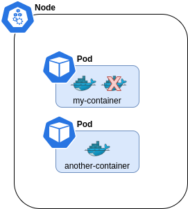

Kubernetes overview
Container orchestration
Kubernetes is a container orchestrator originally built by Google. It is now an open-source project owned by the Cloud Native Computing Foundation (CNCF). The sales pitch on https://kubernetes.io/ sums it like this:
"Kubernetes (K8s) is an open-source system for automating deployment, scaling, and management of containerized applications. It groups containers that make up an application into logical units for easy management and discovery"
It is all about running containers like Docker or Podman together in a safe and structured way. Or put like this: It is (fairly) easy to package an application into a container. But what next? How do you run it in production? What if your application relies on other containers such as database or messaging services or other backend services? What if the number of users increase and you need to scale your application? You would also like to scale down when the load decreases.
To enable these functionalities you need an underlying platform with a set of resources. The platform needs to orchestrate the connectivity between the containers and automatically scale up or down based on the load. This whole process of automatically deploying and managing containers is known as Container Orchestration.
Nodes
Kubernetes runs your workload by placing containers into Pods to run on Nodes. A node may be a virtual or physical machine, depending on the cluster.
The components on a node include the kubelet, a container runtime, and the kube-proxy.
Cluster
A cluster is a set of nodes grouped together. This way even if one node fails, the application will still accessible from the other nodes. Moreover having multiple nodes helps in sharing load as well.
Control plane node (a k a Master)
The control plane manages the worker nodes and the Pods in the cluster. In production environments, the control plane usually runs across multiple computers and a cluster usually runs multiple nodes, providing fault-tolerance and high availability.
The control plane watches over the nodes in the cluster and is responsible for the actual orchestration of containers on the worker nodes.
|
Note
|
Typically you have several nodes in a cluster; in a learning or resource-limited environment, you might have just one. The minikube installed previously gives a K8s cluster with a single node where the Control plane and the containers are run. |
Here is another view of Control Plane and worker nodes, showing more details about the Kubernetes components in play.
When you install Kubernetes on a System, you are actually installing the following components.
- Control plane components
-
-
API Server - exposes the Kubernetes API, is the front end for the Kubernetes control plane.
-
ETCD service - key value store used as Kubernetes' backing store for all cluster data.
-
Scheduler - watches for newly created Pods with no assigned node, and selects a node for them to run on.
-
Controller manager - responsible for detecting when nodes and containers goes down, making sure they go up again.
-
- Node components
-
-
Kubelet - an agent that runs on each node in the cluster, makes sure that containers are running in Pods.
-
Proxy - a network proxy running on each node, allow nodes and containers to communicate with each other.
-
Container Runtime - the software that is responsible for running containers. Like Docker.
-
Installations
Install kubectl
TODO: What is?
- Linux
cat <<EOF > /etc/yum.repos.d/kubernetes.repo [kubernetes] name=Kubernetes baseurl=https://packages.cloud.google.com/yum/repos/kubernetes-el7-x86_64 enabled=1 gpgcheck=1 repo_gpgcheck=1 gpgkey=https://packages.cloud.google.com/yum/doc/yum-key.gpg https://packages.cloud.google.com/yum/doc/rpm-package-key.gpg EOF yum install -y kubectl
- windows
-
-
Download executable
curl -LO https://storage.googleapis.com/kubernetes-release/release/v1.18.0/bin/windows/amd64/kubectl.exe
-
Add the binary in to your PATH
-
Verify
kubectl version --client
-
Add auto completion for kubectl (optional)
Run below command to add kubectl auto completion to your ${HOME}/.bashrc file:
echo "source <(kubectl completion bash)" >> ${HOME}/.bashrc
install Intellij plugin
Search for the official Intellij Kubernetes plugin in Intellij Plugins sections and install it.
Install minikube
Minikube is a tool that makes it easy to run Kubernetes locally. Minikube runs a single-node Kubernetes cluster inside a Virtual Machine (VM) on your laptop.
curl -LO https://storage.googleapis.com/minikube/releases/latest/minikube-latest.x86_64.rpm sudo rpm -ivh minikube-latest.x86_64.rpm
minikube version
Start minikube using docker driver
minikube start --driver=docker # To make it default driver (optional) minikube config set driver docker
See https://minikube.sigs.k8s.io/docs/start/ for details.
For other drivers, see https://minikube.sigs.k8s.io/docs/drivers/
kubectl get pods -A kubectl get po -A kubectl get po --namespace=kube-system
|
Note
|
About kubectl here, kubectl help |
minikube dashboard
or
http://localhost: 8001/api/v1/namespaces/kubernetes-dashboard/services/https:kubernetes-dashboard:/ proxy/
Hands-on
Minikube
Start minikube by running:
minikube start --driver=docker
We are using the docker driver here. For other drivers, please see https://minikube.sigs.k8s.io/docs/drivers.
|
Tip
|
Optional: To make docker the default driver, so you can start without minikube config set driver docker |
Try running your first kubectl command now:
# Display addresses of the master and services kubectl cluster-info
Namespaces
Kubernetes uses namespaces to organize objects in the cluster. You can think of each namespace as a folder that holds a set of objects.
By default, the kubectl command-line tool interacts with the default namespace. If you want to use a different namespace, you can pass kubectl the --namespace flag. For example,
kubectl --namespace=mystuff references objects in the mystuff namespace.
If you want to interact with all namespaces — for example, to list all Pods in your cluster — you can pass the --all-namespaces flag.
|
Tip
|
If you want to change the default namespace more permanently, you can use a context. This gets recorded in a kubectl configuration file, usually located at
For example, you can create a context with a different default namespace for your kubectl commands using: $ kubectl config set-context my-context --namespace=mystuff This creates a new context, but it doesn’t actually start using it yet. To use this newly created context, you can run: $ kubectl config use-context my-context |
Nodes
As you probably recall, a full-fledged Kubernetes cluster consist of a control-plane (master) and worker nodes. In minikube this has been simplified, it uses only one node where the control-plane and containers are run.
This can be seen by running the get nodes command:
# Gets information about nodes in cluster kubectl get nodes # Gets extended information about nodes in cluster kubectl get nodes -o wide
Pods
We want to deploy applications as containers in a Kubernetes cluster. The containers, here in the form of Docker containers, are not however deployed directly on the worker nodes. Instead, they are encapsulated into Kubernetes objects known as pods.
A Pod is the basic execution unit of a Kubernetes application — the smallest and simplest unit in the Kubernetes object model you can create or deploy.
Below diagram shows an example of a pod with a docker container deployed on a node.
|
Note
|
One pod, one container You typically run a single container in one pod (even though there are exceptions to that rule, more on that later). But what if we need more instances of the container? Let’s say that our container It is important to know that this is NOT achieved by adding yet another container in the pod. Instead, we deploy the new instance in its own pod. The rule of thumb is one pod, one container.

|
So let us deploy a Pod into our cluster. This will give us a chance to introduce related kubectl commands.
# Will deploy a pod named hello-minukube based on the stated docker image and port
kubectl run hello-minikube --image=k8s.gcr.io/echoserver:1.4 --port=8080
# Lists deployed pods
kubectl get pods
# Get detailed info about all pods
kubectl describe pods
# Get detailed info about a specified pods
kubectl describe pods hello-minikubeNote that we started the container using the imperative run command, with some flags. We will soon take a look at the declarative approach, where we specify things in YAML-files instead. This is a better approach since we then can version control our setup.
But before doing that, let’s try out some other imperative commands to take look at the application we just deployed.
-
Expose the pod so we can reach it from localhost
kubectl expose pod hello-minikube --type=NodePort
-
Note: This is the imperative way of creating a service. More on services later
-
-
Find out the address we can use to reach the pod
minikube service hello-minikube --url
-
Use the address in a web browser. You should see a response similar to this:
CLIENT VALUES: client_address=172.18.0.1 command=GET real path=/ query=nil request_version=1.1 request_uri=http://172.17.0.2:8080/ SERVER VALUES: server_version=nginx: 1.10.0 - lua: 10001 HEADERS RECEIVED: accept=text/html,application/xhtml+xml,application/xml;q=0.9,image/webp,image/apng,*/*;q=0.8,application/signed-exchange;v=b3;q=0.9 accept-encoding=gzip, deflate accept-language=en-US,en;q=0.9,sv;q=0.8 connection=keep-alive dnt=1 host=172.17.0.2:30816 upgrade-insecure-requests=1 user-agent=Mozilla/5.0 (X11; Fedora; Linux x86_64) AppleWebKit/537.36 (KHTML, like Gecko) Chrome/83.0.4103.116 Safari/537.36 BODY: -no body in request-
-
Enter the container in the pod (much like docker exec -it)
kubectl exec -it hello-minikube -- bash
-
Take a look in README.md file in the root
-
Exit the container
-
-
Delete the service created (i.e. the one allowing you to reach the container via the above address)
kubectl delete service hello-minikube
-
Finally delete the pod
kubectl delete pod hello-minikube
-
Check for it to be gone
kubectl get pods
|
Note
|
You have now got a run through of the most basic kubectl commands related to pods, like get, describe and delete. These are in fact used for all types of Kubernetes objects, as you will soon see.
|
Declarative approach using YAML
It is of course not very persistent or scalable to manage your pods using command line for creating, editing and updating stuff. A better way is to declare the pod using YAML files. These files can be committed to version control systems like Git, allowing us to keep track of how the setup evolves with our application and pipelines.
Let’s declare the same pod using YAML.
-
Create a file named
hello-minikube-pod.yml -
Add this YAML (note that given image has a typo "k9s", which is by design):
apiVersion: v1 kind: Pod metadata: name: hello-minikube spec: containers: - name: hello-minikube image: k9s.gcr.io/echoserver:1.4 ports: - containerPort: 8080 -
Create the pod in cluster
kubectl create -f hello-minikube-pod.yml
-
Check if pod is up and running
kubectl get pods
-
Hmm, seems like there is some trouble pulling the image (see the STATUS field).
-
The field READY shows "0/1", which means that 0 containers are running of 1 wanted.
-
We can see further details about this by running
kubectl describe pods(see events section at the end).
-
-
Fix the typo, the image should be k8s.gcr.io/echoserver:1.4. Save the file, then update by:
kubectl apply -f hello-minikube-pod.yml
-
Check if pods are running now
kubectl get pods # Wider information, like which node the pod has been scheduled to run on, is obtained by adding the flag -o wide kubectl get pods -o wide
-
Delete the pod
kubectl delete pod hello-minikube # Alternative way kubectl delete -f hello-minikube-pod.yml
Replicasets
A ReplicaSet’s purpose is to maintain a stable set of replica Pods running at any given time. As such, it is often used to guarantee the availability of a specified number of identical Pods.
A ReplicaSet ensures that a specified number of pod replicas are running at any given time. There are a variety of reasons for this type of replication:
- Redundancy
-
Multiple running instances mean failure can be tolerated.
- Scale
-
Multiple running instances mean that more requests can be handled
As the last figure implies, the ReplicaSet can control pods running on several nodes. In the above example, the ReplicaSet is instructed to make sure 4 replicas of a pod is up and running at the same time.
Side note: The Kubernetes scheduler will decide on what nodes the pods will run, i.e. the ReplicaSet doesn’t know or care about where the pods are run.
|
Note
|
In the next section we will look at Deployment, which is a higher-level concept that manages ReplicaSets and provides declarative updates to Pods along with a lot of other useful features. However, it makes sense to first focus on how replicasets are declared standalone using it’s own kind, ReplicaSet. The YAML for replicaset will become a sub-part of the deployment YAML later on. |
So let us try out creating a ReplicaSet.
# replicaset kubectl get replicaset
-
Create a file named
hello-minikube-rs.yml -
Add this YAML (note the missing parts for template and selector)
apiVersion: apps/v1 kind: ReplicaSet metadata: name: hello-minikube-nimbus labels: app: hello-minikube spec: replicas: 1 template: selector: -
Go back to
hello-minikube-pod.ymland copy content from metadata and down, then add it inhello-minikube-rs.ymlunder template. Make sure the indentation gets right here.apiVersion: apps/v1 kind: ReplicaSet metadata: name: hello-minikube-nimbus labels: app: hello-minikube spec: replicas: 1 template: metadata: name: hello-minikube spec: containers: - name: hello-minikube image: k8s.gcr.io/echoserver:1.4 ports: - containerPort: 8080 selector: -
Under spec.template.metadata, add a label "app: hello-minikube" as shown below.
-
Labels can be used to label Kubernetes objects. They takes the form of key: value, and both key and value kan be anything you like. In the example below we are using "app" as key and "hello-minikube" as value.
apiVersion: apps/v1 kind: ReplicaSet metadata: name: hello-minikube-nimbus labels: app: hello-minikube spec: replicas: 1 template: metadata: name: hello-minikube # Adding a label to the pod template here labels: app: hello-minikube spec: containers: - name: hello-minikube image: k8s.gcr.io/echoserver:1.4 ports: - containerPort: 8080 selector:
-
-
Lastly, add the selector section that decides which pods to be supervised by the replicaset
-
The below selector uses matchLabels to match all pods having the label app: hello-minikube.
apiVersion: apps/v1 kind: ReplicaSet metadata: name: hello-minikube-nimbus labels: app: hello-minikube spec: replicas: 1 template: metadata: name: hello-minikube # Adding a label to the pod template here labels: app: hello-minikube spec: containers: - name: hello-minikube image: k8s.gcr.io/echoserver:1.4 ports: - containerPort: 8080 # The selector will match all pods having label hello-minikube, bringing them in under the supervision of this replicaset selector: matchLabels: app: hello-minikube
-
-
Create the replicaset
kubectl create -f hello-minikube-rs.yml
-
List all replicasets
kubectl get replicasets # or alternatively kubectl get rs # Also try the wider listing kubectl get rs -o wide
-
Take note of the output, it should tell you that 1 current pod of 1 desired is running
-
-
Get detailed info
kubectl describe rs
-
Note the events section at the end of output, showing the name of the pod created
-
-
It is of course possible to use the pods commands to look at the pod
kubectl get pods kubectl describe pods
-
Take note of the pod name, for example hello-minikube-replicaset-xjnj2
-
Try to delete the pod and see what happens
# Delete the pod with name obtained in step 10 kubectl delete pod hello-minikube-replicaset-xjnj2 # Check running pods kubectl get pods
-
The expected outcome is READY 1/1 STATUS Running (if you get 0/1, just repeat
kubectl get pods). Take note of the pod name, which now should be different.The thing you just witnessed was the ReplicaSet kicking in, making sure that 1 replica is always up and running.
-
-
Change the replicas to 6, i.e. open file
hello-minikube-rs.ymland changereplicas: 1toreplicas: 6.# Apply the changes kubectl apply -f hello-minikube-rs.yml # Watch how the state changes when the new instances spins up (perform command repeatedly) kubectl describe rs # It is also possible to list all objects kubectl get all
-
(Optional) If you are interested, edit the replicas back to 1 and apply the changes to see the reverse process
-
Delete the replicaset (this will remove the pod as well)
kubectl delete replicaset hello-minikube-replicaset # or kubectl delete -f hello-minikube-rs.yml
Deployment
A Deployment provides declarative updates for Pods and ReplicaSets. The deployment provides us with capabilities to upgrade the underlying pods seamlessly using rolling updates, undo changes, and pause and resume changes to deployments.
The Deployment object exists to manage the release of new versions. Deployments enable you to easily move from one version of your code to the next. This “rollout” process is specifiable and careful. It waits for a userconfigurable amount of time between upgrading individual Pods. It also uses health checks to ensure that the new version of the application is operating correctly, and stops the deployment if too many failures occur.
So how do we create a deployment. As with the previous components, we first create a deployment definition file. The contents of the deployment definition file are exactly similar to the replicaset definition file, except for the kind, which is now going to be Deployment.
apiVersion: apps/v1
kind: Deployment
metadata:
name: hello-minikube-nimbus
labels:
app: hello-minikube
spec:
replicas: 4
template:
metadata:
name: hello-minikube
labels:
app: hello-minikube
spec:
containers:
- name: hello-minikube
image: k8s.gcr.io/echoserver:1.2
ports:
- containerPort: 8080
selector:
matchLabels:
app: hello-minikubeNote that we have done some minor adjustment to the definition above, the version of the image is 1.2 instead of 1.4, and the number of replicas is set to 4.
-
Create file hello-minikube-dep.yml and add the above declaration to it
-
Create the deployment
kubectl create -f hello-minikube-dep.yml
-
Check the content
kubectl get deployments # Go wider (you can see the image and version here) kubectl get deployments -o wide # Perhaps easiest is to do a "get all", showing all object, i.e. pods, replicasets and deployments (and more) kubectl get all # Do check the details (pay attention to the fields) kubectl describe deployments
-
Try out a rolling upgrade by changing the version of the image to 1.4, then apply it
# Apply changes kubectl apply -f hello-minikube-dep.yml # Quickly check what happening by running repeatedly kubectl describe deployment
-
After the rollout is complete, run
kubectl describe deploymentagain and look at the events section at the end. There you should see how the rollout was executed. -
Try out some related commands that are self-explanatory
kubectl rollout status -f hello-minikube-dep.yml kubectl rollout history -f hello-minikube-dep.yml
-
Let’s pretend that version 1.4 was not good for us, so we want to undo it.
kubectl rollout undo -f hello-minikube-dep.yml
-
Check the result. We should now be back on version 1.2
-
Do not delete the deployment just yet. Before we do that, let’s visit the dashboard.
Sneak peak: Dashboard
The dashboard is a graphical UI that allow us to perform many of the tasks we have used the command line for.
The dashboard application is installed along with the Kubernetes cluster. We are using minikube right now, so in order to the dashboard up we need to run this command:
minikube dashboard
This should open up the dashboard in your web browser. Browse around in it, take a look at the Deployments and Pods (see menu to the left).